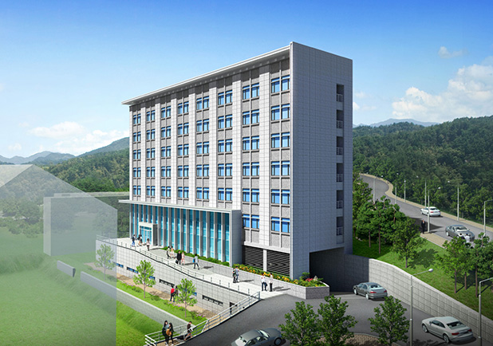

<table width="100%" cellpadding="0" cellspacing="0" border="0">
	<tr>
		<td width="15" nowrap></td>
		<td style="padding-top:20px;">
			<table width="100%" cellpadding="0" cellspacing="0" border="0" style="text-align:justify;line-height:14pt;letter-spacing:0.1mm;">
				<tr>
					<td style="padding-bottom:35px;">
						<span style="color:#7C0019; font-size:16px;"><font size=2>■</font> <b><u>대학원생 - 안암글로벌하우스 1인실/2인실/3인실</u></b></span><br>
						<span style="color:#7C0019; font-size:14px;"><b>&nbsp;&nbsp;&nbsp;Anam Global House single room for Graduate school students</b></span>
					</td>
				</tr>
				<tr>
					<td style="padding-bottom:20px;" align="center"></td>
				</tr>
				<tr>
					<td style="padding-bottom:20px;">
						안암글로벌하우스는 화장실이 딸려 있는 1인실, 2인실, 3인실이 제공됩니다.<br>
각  실별로 개인용 침대, 옷장, 의자, 책꽂이, 세면대, 화장실, 샤워실, 신발장이 제공됩니다. 1인실은 책상과 침대가 놓인 개별 공간과 화장실, 샤워실, 세면대 공동 공간으로 구성되어 있습니다.<br>
2인실과 3인실은 배정된 룸메이트들과 함께 생활할 수 있는 공동 공간으로 구성되어 있습니다. 

					</td>
				</tr>
				<tr>
					<td style="padding-bottom:20px;">
						Anam Global House offers triples, doubles, and singles and has semi-private baths.
Anam Global House provides a single bed, wardrobe, chair, bookcase, and semi-private baths. Anam Global House offers Single, Double, Triples. Single room consists of a private space (desk, bed), and bathroom facilities are installed in the room and are shared by roommates. Doubles and Triples consist of a common space where you can live your flat mates.
					</td>
				</tr>
			</table>
		</td>
	</tr>
</table>